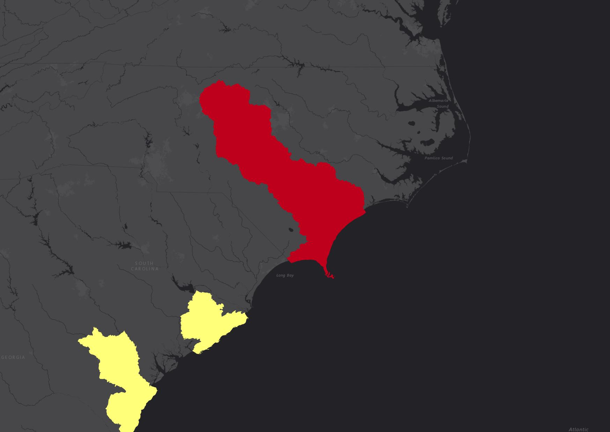
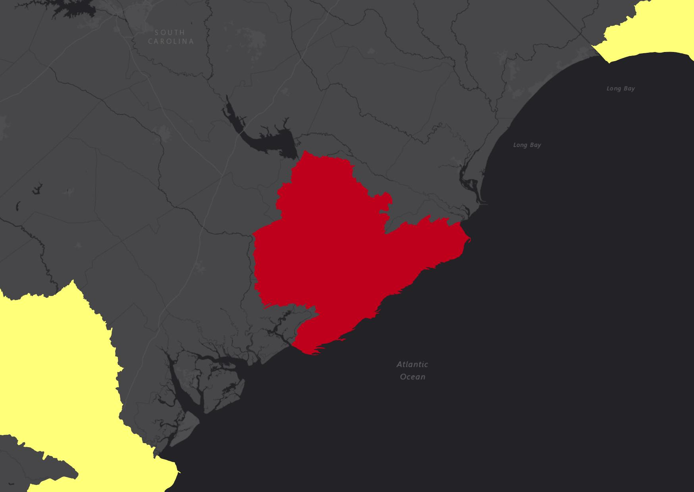
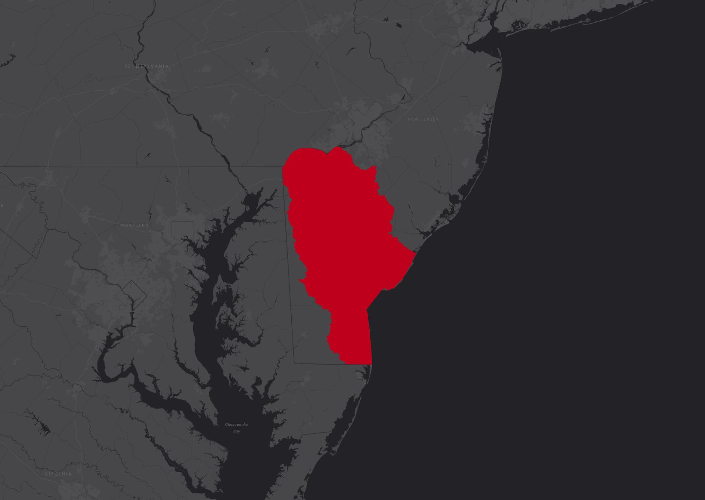
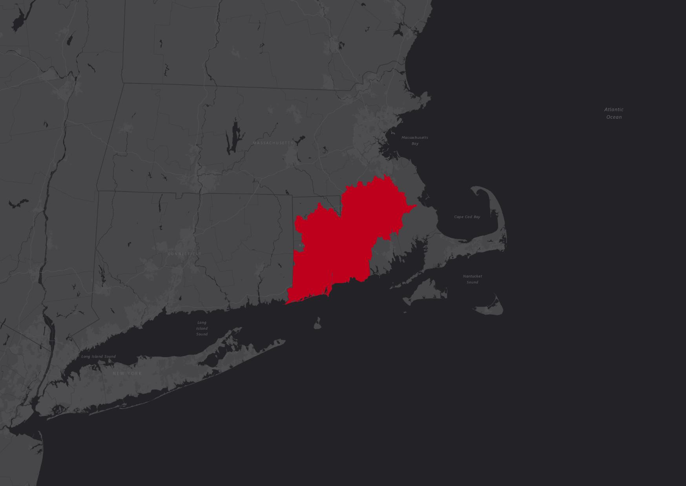
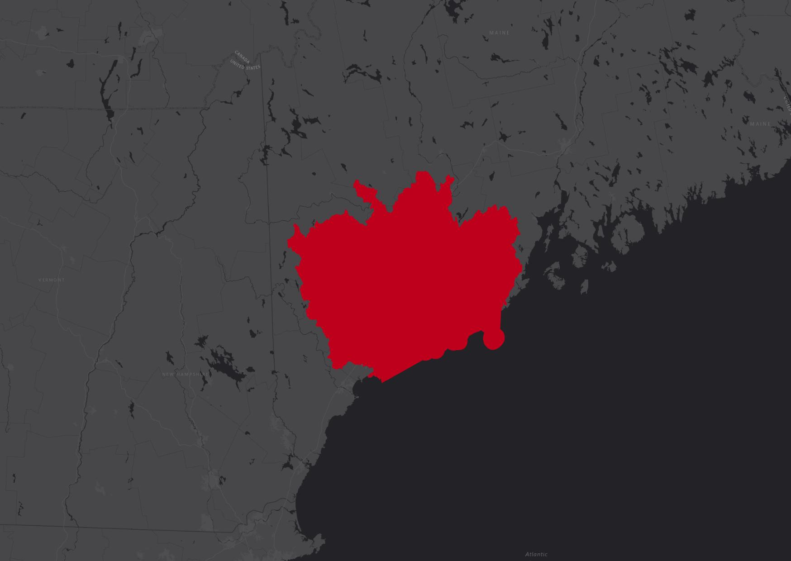
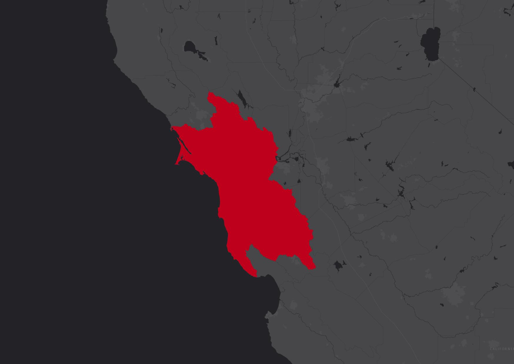
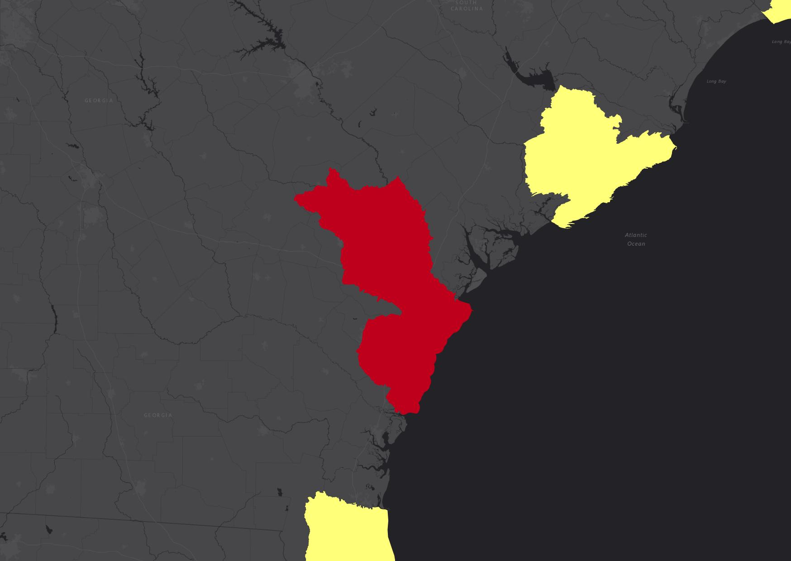
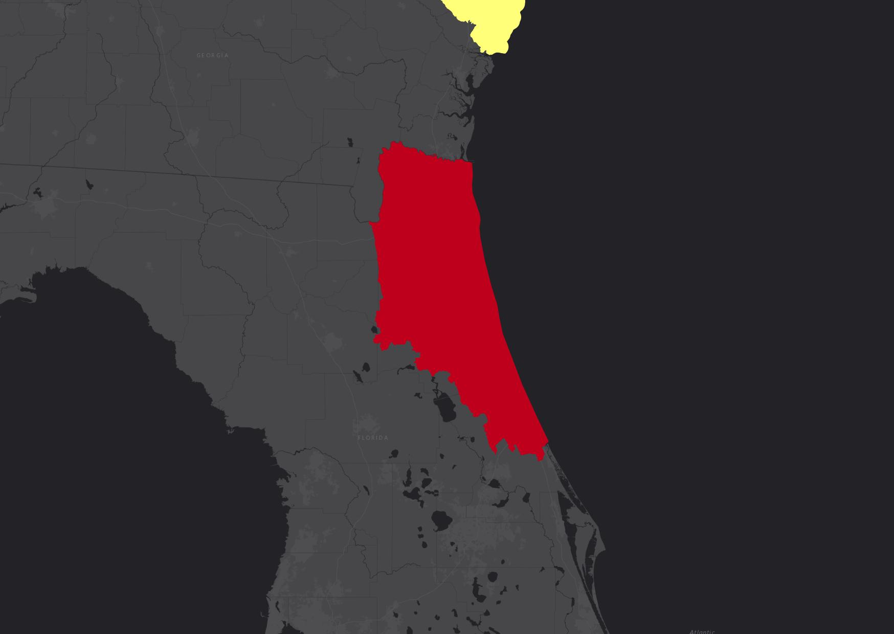

<div>
  <!-- <span class="exlpore-directions">In-depth analyses were done for 8 locations in the United States.</span> -->
  <div class="zoomLinks-Group zoomLinks-collapser" id="zoomLinks-Group-Header">
    <div class="zoomLinks-header zoomLinks-collapser-header" id="zoomLinks-Header" data-toggle="collapse" data-target="#CollapsZoomLinks" aria-expanded="false" aria-controls="CollapsZoomLinks">
      Click to Zoom to a Targeted Watershed
      <i class="fa fa-caret-up icon-right d-none" aria-hidden="false"></i>
      <i class="fa fa-caret-down icon-right d-none" aria-hidden="false"></i>
    </div>
    <div class="collapse" id="CollapsZoomLinks">
      <div id="zoomLinks-list" class="list-group list-group-dark zoomLinks-list closed">
        <button title="Base Map Dark Gray" aria-label="Base Map Dark Gray" id="zoomLinks-capefear" type="button" class="list-group-item list-group-item-action">
          <!--  -->
          <span class="zoomLinks-list-label-name">Cape Fear</span>
        </button>
        <button title="Base Map Dark Gray" aria-label="Base Map Dark Gray" id="zoomLinks-charleston" type="button" class="list-group-item list-group-item-action">
          <!--  -->
          <span class="zoomLinks-list-label-name">Charleston Harbor</span>
        </button>
        <button title="Base Map Imagery" aria-label="Base Map Imagery" id="zoomLinks-delawarebay" type="button" class="list-group-item list-group-item-action">
          <!--  -->
          <span class="zoomLinks-list-label-name">Delaware Bay Coast</span>
        </button>
        <button title="Base Map Topographic" aria-label="Base Map Topographic" id="zoomLinks-narragansettbay" type="button" class="list-group-item list-group-item-action">
          <!--  -->
          <span class="zoomLinks-list-label-name">Narragansett Bay and Coastal Rhode Island</span>
        </button>
        <button title="Base Map Streets" aria-label="Base Map Dark Streets" id="zoomLinks-portlandmaine" type="button" class="list-group-item list-group-item-action">
          <!--  -->
          <span class="zoomLinks-list-label-name">Portland and Midcoast Maine</span>
        </button>
        <button title="Base Map Streets" aria-label="Base Map Dark Streets" id="zoomLinks-sanfranciscobay" type="button" class="list-group-item list-group-item-action">
          <!--  -->
          <span class="zoomLinks-list-label-name">San Francisco Bay and Outer Coast</span>
        </button>
        <button title="Base Map Streets" aria-label="Base Map Dark Streets" id="zoomLinks-savannahriver" type="button" class="list-group-item list-group-item-action">
          <!--  -->
          <span class="zoomLinks-list-label-name">Savannah River</span>
        </button>
        <button title="Base Map Streets" aria-label="Base Map Dark Streets" id="zoomLinks-stjohnsriver" type="button" class="list-group-item list-group-item-action">
          <!--  -->
          <span class="zoomLinks-list-label-name">Jacksonville and Lower St. Johns River</span>
        </button>
      </div>
    </div>
  </div>
  <!-- <span>In-depth analyses were done for 8 locations in the United States.</span> -->
